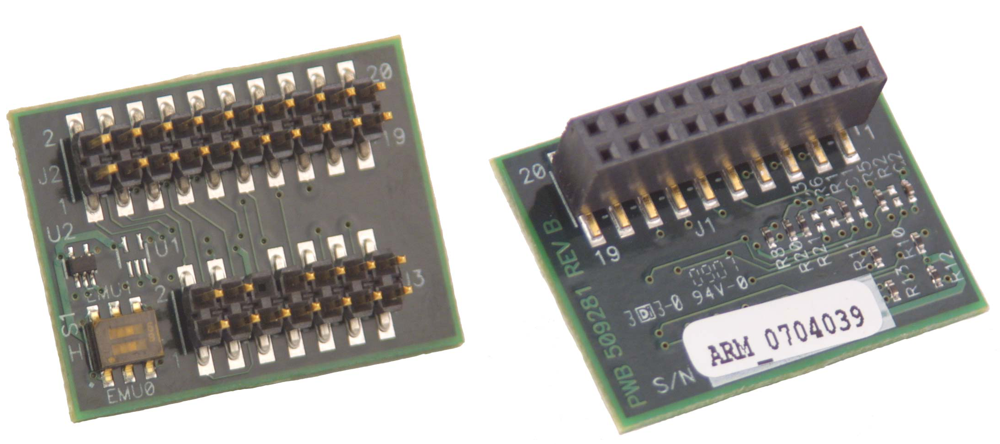
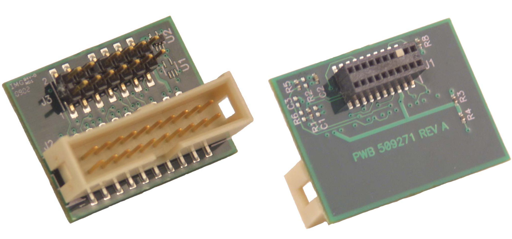
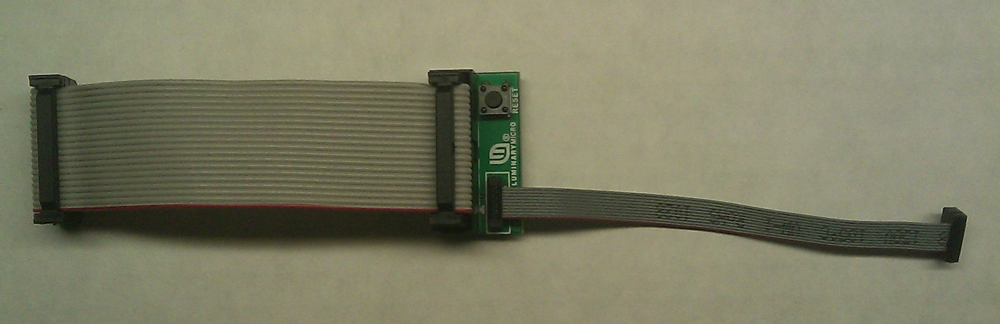

<!-- Start of markdown source -->
# Introduction
Texas Instruments and its third parties support a variety of adapters to convert across different JTAG headers and connectors available in the marketplace. This page covers in detail the most common models available.
# References
* [XDS Target Connection Guide](emu_xds_target_connection_guide.html)
* [Emulation and Trace Headers Technical Referece Manual](https://www.ti.com/lit/ug/spru655i/spru655i.pdf)
* [JTAG Connectors and Pinout](emu_jtag_connectors.html)
* The document [Designing for JTAG Emulation Reference Guide](https://www.ti.com/lit/ug/spru641/spru641.pdf) describes the 14-pin JTAG connector and target board electrical requirements for XDS510 JTAG support (despite it's title it is not specific to the TMS320C6000 DSP). Also see your debug probe manufacturer's documentation for debug probe specific information.
* The [XDS560 Emulator Technical Reference](https://www.ti.com/lit/ug/spru589a/spru589a.pdf)
* For Trace, you may also want to consider reading [Common Trace Transmission Problems and Solutions](https://www.ti.com/lit/an/spraak6/spraak6.pdf)
* [Emulation Fundamentals for TI's DSP Solutions](https://www.ti.com/lit/an/spra439e/spra439e.pdf)
# JTAG Adapters
There are two types of connectors:
* Emulator: This is the connector on the emulator/JTAG ICE/UIF/XDS unit
* Target: This is the connector on the target card
# Types of adapters
* Pin Converters: passive conversion of one connector type to another
* Adapter: some active components for different purposes. Ex: Addition of adaptive clocking, buffering of TCK/RTCK signals, Isolation, etc.
# JTAG connectors cross reference
The table below only references adapters available by TI and its direct third parties. It is possible to find other adapters for sale from external companies.
<font size="1">
<table id="stl01">
<tr>
<th colspan="2"> <font color="#0000f0">Target connector</font> </th>
<th rowspan="2"> <font color="#0000f0">10-pin ARM</font> </th>
<th rowspan="2"> <font color="#0000f0">14-pin TI</font> </th>
<th rowspan="2"> <font color="#0000f0">20-pin TI</font> </th>
<th rowspan="2"> <font color="#0000f0">20-pin ARM</font> </th>
<th rowspan="2"> <font color="#0000f0">60-pin TI</font> </th>
<th rowspan="2"> <font color="#0000f0">60-pin MIPI</font> </th>
</tr>
<tr>
<th colspan="2"> <font color="#f00000">Emulator Connector</font> </th>
</tr>
<tr>
<th colspan="2"> <font color="#f00000">10-pin ARM</font> </th>
<td> N/A </td>
<td> N/A </td>
<td> N/A </td>
<td> [MDL-ADA2](#mdl-ada2) </td>
<td> N/A </td>
<td> N/A </td>
</tr>
<tr>
<th colspan="2"> <font color="#f00000">14-pin TI</font> </th>
<td> N/A </td>
<td> <p>[TMDSADP1414](#tmdsadp1414)<sup>2,3,4</sup></p> <p>BH-ADP-ISO14<sup>1,6</sup></p> <p>701208<sup>2,7</sup></p> <p>701210<sup>2,3,4,7</sup></p> </td>
<td> <p>[TMDSADP1420](#tmdsadp1420)<sup>2,3,4</sup></p> <p>[TMDSADPEMU-20T](#tmdsadpemu-20t)<sup>3</sup></p> <p>701212<sup>2,3,4,7</sup></p> <p>701214<sup>3,7</sup></p> <p>701219<sup>7</sup></p> <p>BH-ADP-14E_TI-20T_CTI<sup>6</sup></p> </td>
<td> <p>[TMDSADPEMU-20A](#tmdsadpemu-20a)<sup>3</sup></p> <p>701216<sup>3,7</sup></p> <p>701280<sup>7</sup></p> </td>
<td> <p>[TMDSADP1460](#tmdsadp1460)</p> <p>BH-ADP-14E_TI-60T_TI<sup>6</sup></p> </td>
<td> <p>BH-ADP-14E_TI+20E_CTI-60T_MIPI<sup>6</sup></p> <p>701282<sup>7</sup></p> </td>
</tr>
<tr>
<th colspan="2"> <font color="#f00000">20-pin TI</font> </th>
<td> <p>BH-ADP-20E_CTI-10T_ARM<sup>6</sup></p> <p>70217<sup>7</sup></p> <p>selected emulators<sup>8,15,17</sup></p> </td>
<td> <p>BH-ADP-20E_CTI-14T_TI<sup>6</sup></p> <p>701218<sup>7</sup></p> <p>selected emulators<sup>8,9,10,11,12,15,17</sup></p> </td>
<td> <p>BH-ADP-ISO20<sup>1,6</sup></p> <p>BH-ADP-ISO110<sup>1,6</sup></p> </td>
<td> <p>BH-ADP-20E_CTI-20T_ARM<sup>6</sup></p> <p>701222<sup>7</sup></p> <p>selected emulators<sup>10,15,17</sup></p> </td>
<td> <p>BH-ADP-20E_CTI-60T_TI<sup>6</sup></p> <p>701220<sup>7</sup></p> </td>
<td> <p>BH-ADP-14E_TI+20E_CTI-60T_MIPI<sup>6</sup></p> <p>701282<sup>7</sup></p> </td>
</tr>
<tr>
<th colspan="2"> <font color="#f00000">20-pin ARM</font> </th>
<td> [MDL-ADA2](#mdl-ada2) </td>
<td> <p>AD-MIPI60-MICTOR (LA-7748)<sup>5</sup></p> <p>J-Link 14-pin TI Adapter<sup>16</sup></p> </td>
<td> <p>[TMDSADPEMU-20T](#tmdsadpemu-20t)<sup>3</sup></p> <p>701214<sup>3,7</sup></p> <p>J-Link TI-CTI-20 Adapter<sup>16</sup></p> </td>
<td> <p>[TMDSADPEMU-20A](#tmdsadpemu-20a)<sup>3</sup></p> <p>701216<sup>3,7</sup></p> </td>
<td> N/A </td>
<td> N/A </td>
</tr>
<th colspan="2"> <font color="#f00000">60-pin TI</font> </th>
<td> N/A </td>
<td> BH-ADP-60E_TI-14T_TI<sup>6</sup> </td>
<td> N/A </td>
<td> N/A </td>
<td> BH-ADP-60E_TI-60T_TI<sup>6</sup> </td>
<td> N/A </td>
</tr>
<tr>
<th colspan="2"> <font color="#f00000">60-pin MIPI</font> </th>
<td> N/A </td>
<td> <p>BH-ADP-60E_MIPI-14T_TI<sup>6</sup></p> <p>701230<sup>7</sup></p> <p>selected emulators<sup>13,14</sup></p> </td>
<td> <p>BH-ADP-60E_MIPI-20T_CTI<sup>6</sup></p> <p>701232<sup>7</sup></p> <p>selected emulators<sup>13,14</sup></p> </td>
<td> <p>BH-ADP-60E_MIPI-20T_ARM<sup>6</sup></p> <p>701234<sup>7</sup></p> <p>selected emulators<sup>13,14</sup></p> </td>
<td> <p>BH-ADP-60E_MIPI-60T_TI<sup>6</sup></p> <p>701236<sup>7</sup></p> <p>selected emulators<sup>14</sup></p> </td>
<td> N/A </td>
</tr>
</table>
</font>
<sup>1</sup> Isolation adapter
<sup>2</sup> Voltage Translation
<sup>3</sup> RTCK Signal Boost
<sup>4</sup> Adaptive Clocking
<sup>5</sup> Available from [Lauterbach](http://www.lauterbach.com/adhalfsize.html)
<sup>6</sup> Available from [Blackhawk](http://store.blackhawk-dsp.com/jtag-adapters-pin-converters.html)
<sup>7</sup> Available from [Spectrum Digital](http://www.spectrumdigital.com/jtagaccessories/)
<sup>8</sup> Bundled with [Blackhawk XDS100v2 Model D](https://www.blackhawk-dsp.com/products/USB100v2D.aspx)
<sup>9</sup> Bundled with [Spectrum Digital XDS100v3](http://www.spectrumdigital.com/product_info.php?cPath=22&products_id=251)
<sup>10</sup> Bundled with Spectrum Digital [XDS200](http://www.spectrumdigital.com/product_info.php?cPath=22&products_id=261) and [XDS220](http://www.spectrumdigital.com/product_info.php?cPath=22&products_id=260) emulators
<sup>11</sup> Bundled with Blackhawk XDS560 emulators: [BP](https://www.blackhawk-dsp.com/products/USB560BP.aspx) (only 20 TI to 14 TI), [m](https://www.blackhawk-dsp.com/products/USB560.aspx), [LAN](https://www.blackhawk-dsp.com/products/LAN560.aspx), [PCI](https://www.blackhawk-dsp.com/products/PCI560.aspx)
<sup>12</sup> Bundled with [Spectrum Digital XDS560v2 LC Traveler](http://www.spectrumdigital.com/product_info.php?products_id=254) and [Spectrum Digital XDS560v2 STM Traveler](http://www.spectrumdigital.com/product_info.php?cPath=22&products_id=249)
<sup>13</sup> Bundled with [Blackhawk USB560v2](https://www.blackhawk-dsp.com/products/USB560v2.aspx)
<sup>14</sup> Bundled with [Blackhawk XDS560v2](https://www.blackhawk-dsp.com/products/XDS560v2.aspx) and [Spectrum Digital XDS560v2 STM with target adapters](http://www.spectrumdigital.com/product_info.php?cPath=22&products_id=236)
<sup>15</sup> Bundled with [Blackhawk XDS200](http://store.blackhawk-dsp.com/default/usb200-jtag-emulator-1.html) emulators
<sup>16</sup> Available from [Segger](https://www.segger.com/products/debug-probes/j-link/accessories/adapters/overview/)
<sup>17</sup> Bundled with Texas Instruments [XDS110](https://www.ti.com/xds110)
# Part numbers
##TI
### TMDSADP1414
Product page: https://www.ti.com/tool/tmdsadp.html

### TMDSADP1420
Product page: https://www.ti.com/tool/tmdsadp.html

### TMDSADP1460
Product page: https://www.ti.com/tool/tmdsadp.html

### TMDSADPEMU-20A
Product page: https://www.ti.com/tool/tmdsadp.html

<!--  -->
### TMDSADPEMU-20T
Product page: https://www.ti.com/tool/tmdsadp.html

<!--  -->
##Third party adapters
* [Blackhawk adapters](http://store.blackhawk-dsp.com/jtag-adapters-pin-converters.html) has many options, including galvanically isolated adapters
* [Spectrum Digital adapters](http://www.spectrumdigital.com/jtagaccessories/) has many options, including voltage level translators and buffers
##Discontinued
### MDL-ADA2
Replica of the old Luminary product page at [Digi-key](http://media.digikey.com/pdf/Data%20Sheets/Texas%20Instruments%20PDFs/MDL-ADA2.pdf) and at [Farnell](https://www.farnell.com/datasheets/1520171.pdf)

<!--  -->
# Pinouts
Please check the [JTAG Connectors and Pinout](emu_jtag_connectors.html) page for a complete reference about pinouts and part numbers.
# Troubleshooting
See the information on troubleshooting JTAG Connectivity Problems at: [Debugging JTAG Connectivity Problems](../ccsv7_debugging_jtag_connectivity_issues.html).
<!-- End of markdown source -->
<div id="footer"></div>